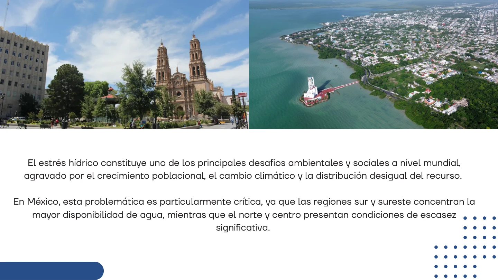
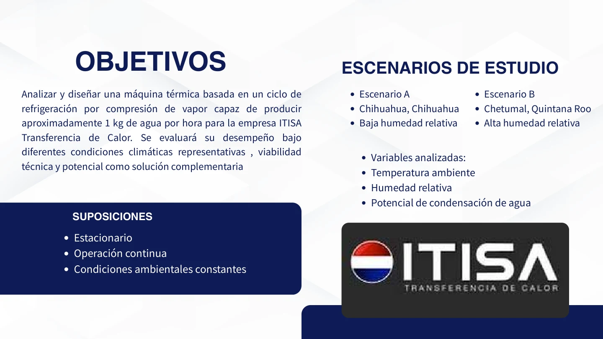
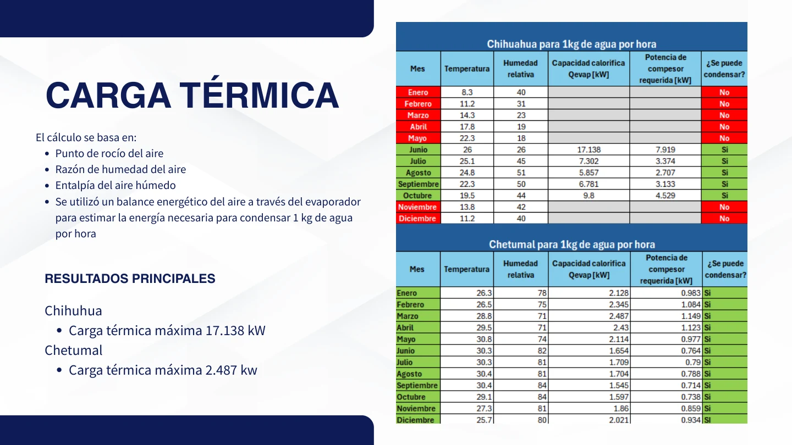
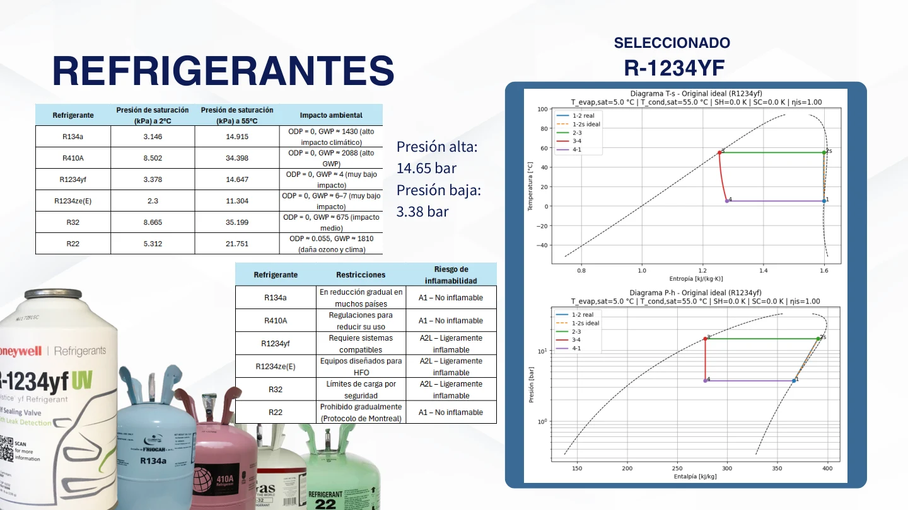
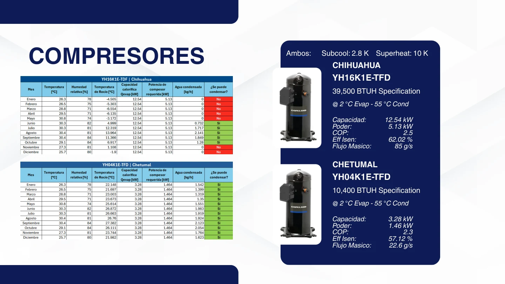
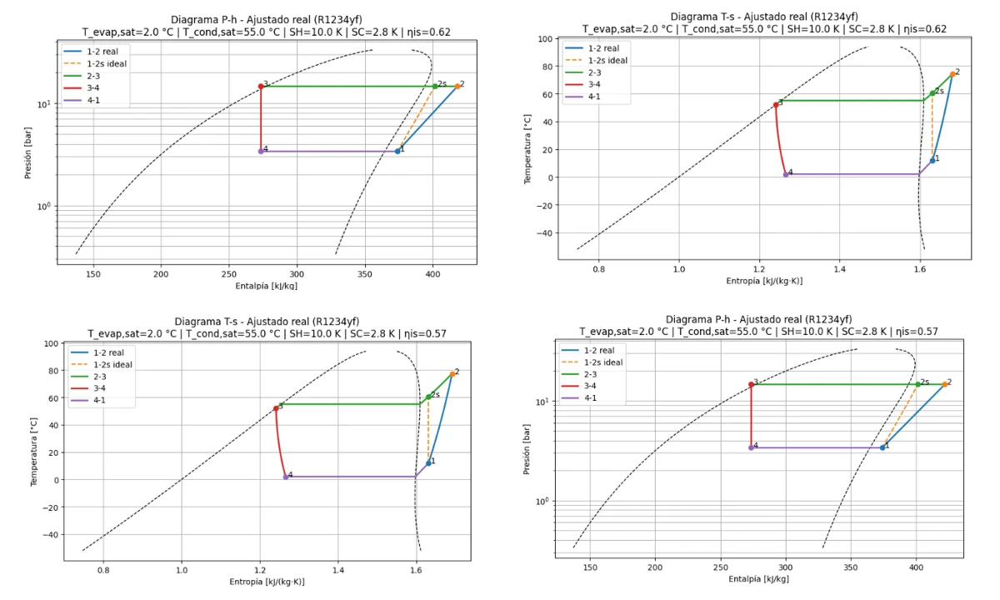
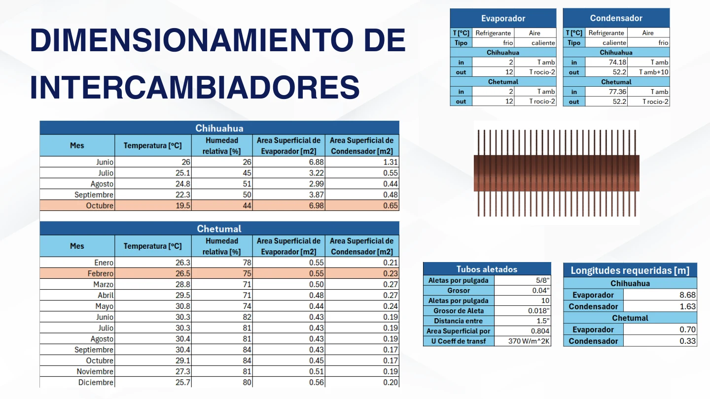
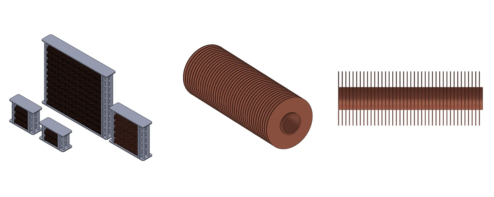
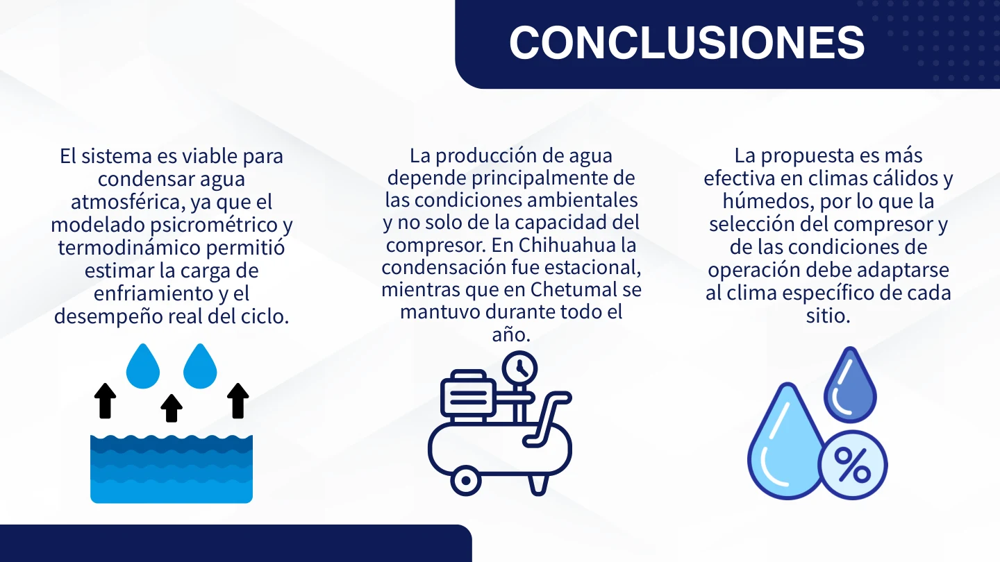

Thermodynamics & heat exchanger design
Atmospheric water generation
One water target. Two very different climates.
A conceptual vapor-compression system designed around psychrometrics, refrigerant selection and heat exchanger sizing.
Academic team project · ITISA
Engineering decisions, evidence and lessons from the team presentation.
01 / A climate-dependent water target
The objective was to evaluate a vapor-compression system capable of condensing approximately 1 kg of atmospheric water per hour for an ITISA academic project. Two contrasting locations were modeled: dry Chihuahua and humid Chetumal, Quintana Roo. The calculation assumed steady, continuous operation and constant ambient conditions within each scenario.


02 / Psychrometrics & cooling demand
Ambient temperature and relative humidity define dew point, humidity ratio and moist-air enthalpy. A mass and energy balance estimates how much air must be processed and cooled to remove the target water mass. This makes humidity a primary sizing variable, alongside temperature.
| Model result | Chihuahua | Chetumal |
|---|---|---|
| Modeled condensation period | June–October | All months |
| Maximum cooling load | 17.138 kW, June | 2.487 kW, March |
| Cooling-load range in feasible months | 5.857–17.138 kW | 1.545–2.487 kW |

The model predicts much greater cooling demand in the dry location. These are calculated scenario results, not measured water-production data.
03 / Refrigerant & compressor selection
The team compared refrigerants and selected R1234yf. The cycle used approximately 14.65 bar high-side pressure and 3.38 bar low-side pressure, with an evaporating temperature of 2 °C, condensing temperature of 55 °C, 2.8 K subcooling and 10 K superheat. Pressure–enthalpy and temperature–entropy plots describe the state changes.

| Selected compressor data | Chihuahua | Chetumal |
|---|---|---|
| Model | YH16K1E-TFD | YH04K1E-TFD |
| Cooling capacity | 12.54 kW | 3.28 kW |
| Electrical power | 5.13 kW | 1.46 kW |
| Reported COP | 2.5 | 2.3 |
| Reported efficiency | 62.02% | 57.12% |
| Mass flow | 85 g/s | 22.6 g/s |


04 / Heat exchanger sizing & CAD
The heat-transfer calculations were translated into finned-tube concepts for the evaporator and condenser. The presentation compares required surface areas by month, estimates tube lengths and counts, and develops rectangular finned assemblies and a cylindrical finned-tube concept.
| Reported geometry | Chihuahua | Chetumal |
|---|---|---|
| Evaporator total tube length | 8.68 m | 0.70 m |
| Condenser total tube length | 1.63 m | 0.33 m |
| Evaporator tube count | 22 | 6 |
| Condenser tube count | 10 | 4 |


05 / What the model established
Atmospheric water recovery is strongly dependent on climate. In the studied model, Chetumal permits year-round condensation with lower cooling demand, while Chihuahua is seasonal and requires substantially more capacity. Refrigerant, compressor and exchanger selection must be evaluated together against the local operating envelope.

This is a conceptual design and thermodynamic evaluation; no manufactured prototype or measured water yield is documented. The next engineering step is to reconcile peak loads with equipment capacity and validate the complete system under the intended ambient conditions.
Academic team: Cristian Álvarez, Alexis Giombini and Roberto Guagnelli · Tecnológico de Monterrey / ITISA.